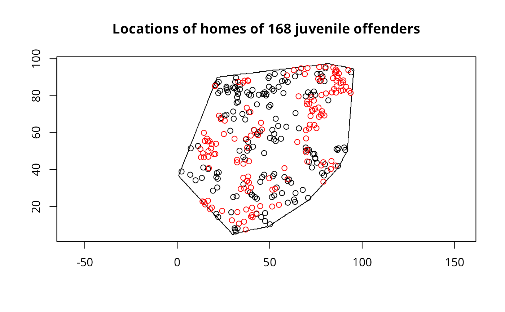

pcp.sim.RdThe function generates a Poisson cluster process for a given polygon within a larger bounding region and given process parameters
pcp.sim(rho, m, s2, region.poly, larger.region=NULL, vectorise.loop=TRUE)intensity of the parent process
average number of offsprings per parent
variance of location of offsprings relative to their parent
a polygon defining the region in which the process is to be generated
a rectangle containing the region of interest given in the form (xl,xu,yl,yu), defaults to sbox() around region.poly
if TRUE, use new vectorised code, if FALSE, use loop as before
The function generates the parents in the larger bounding region, generates their children also in the larger bounding region, and then returns those inside the given polygon.
A point object with the simulated pattern
Diggle, P. J. (1983) Statistical analysis of spatial point patterns, London: Academic Press, pp. 55-57 and 78-81; Bailey, T. C. and Gatrell, A. C. (1995) Interactive spatial data analysis, Harlow: Longman, pp. 106-109.
data(cardiff)
polymap(cardiff$poly)
pointmap(as.points(cardiff), add=TRUE)
title("Locations of homes of 168 juvenile offenders")
pcp.fit <- pcp(as.points(cardiff), cardiff$poly, h0=30, n.int=30)
pcp.fit
#> $par
#> s2 rho
#> 6.16109743 0.01136752
#>
#> $value
#> [1] 0.02734823
#>
#> $counts
#> function gradient
#> 77 NA
#>
#> $convergence
#> [1] 0
#>
#> $message
#> NULL
#>
m <- npts(as.points(cardiff))/(areapl(cardiff$poly)*pcp.fit$par[2])
sims <- pcp.sim(pcp.fit$par[2], m, pcp.fit$par[1], cardiff$poly)
pointmap(as.points(sims), add=TRUE, col="red")
